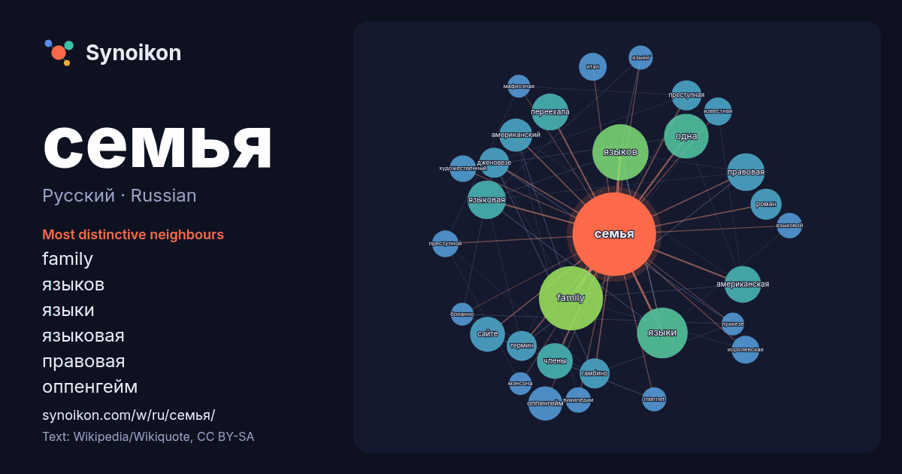

Русский · Russian · popular word
семья
“family” · The words found around it in 1107 instances from Russian Wikipedia, Wikiquote.

Most distinctive neighbours
- family 63×
- языков 35×
- языки 32×
- языковая 24×
- правовая 23×
- оппенгейм 19×
- переехала 17×
- американская 17×
- сайте 15×
- преступная 15×
- гамбино 15×
- дженовезе 15×
- одна 14×
- члены 14×
- итал 13×
- королевская 12×
- преступной 12×
- известная 11×
- википедии 11×
- американский 11×
× = how many times more often than in general Russian Wikipedia text.
Most frequent neighbours
- family 64
- языков 49
- языки 40
- одна 31
- фильм 26
- языковая 23
- правовая 22
- американская 21
- переехала 21
- члены 20
- сайте 19
- оппенгейм 18
- американский 17
- является 17
- роман 15
- гамбино 14
- дженовезе 14
- преступная 14
- термин 14
- название 13
In context
- следующие стадии эволюции семьи: матриархальная семья, патриархальная семья, индивидуальная семья. При матриархальной семье счёт родства вёлся по матери Wikipedia snippets · Семья
- искусство стран СНГ XX—XXI века. Большой вклад в развитие музея внесла семья Невзоровых, в 1988 году Юлий Владимирович Невзоров, его супруга Антонина Wikipedia snippets · Семей
- «Семья как семья», или «Ко́робовы встречают Новый год» — советский новогодний телефильм 1970 года режиссёра Бориса Ниренбурга. Впервые фильм был показан Wikipedia snippets · Семья как семья
- Семья Кардашьян, также называемая семьей Кардашьян-Дженнер, — американская семья, известная в сфере развлечений, реалити-шоу, дизайна одежды и бизнеса Wikipedia snippets · Семья Кардашьян
- Семья Кеннеди — американская династия ирландского происхождения, многие представители которой были известными политиками и занимали высокие должности Wikipedia snippets · Семья Кеннеди
- Почти семья (англ. Almost Family) — американский телесериал, основанный на австралийском сериале «Сёстры». Премьера состоялась 2 октября 2019 года на Wikipedia snippets · Почти семья
- Преступная семья Гамбино (Gambino) является одной из «пяти семей», контролирующих организованную преступную деятельность в Нью-Йорке (США) в рамках такого Wikipedia snippets · Семья Гамбино
- Аниме «Семья шпиона» (англ.) в базе данных Internet Movie Database Аниме «Семья шпиона» (англ.) в энциклопедии сайта Anime News Network Аниме «Семья шпиона» (англ Wikipedia snippets · Семья шпиона
More Russian words
- бог
- власть
- вода
- деньги
- жизнь
- здоровье
- золото
- искусство
- истина
- история
- климат
- кошка
- мост
- наука
- пища
- поезд
- природа
- работа
- сердце
- смерть
- собака
- язык
Precomputed on 2026-10-09 with default settings (±5 words, medium corpus). The interactive map can refresh it with live data.